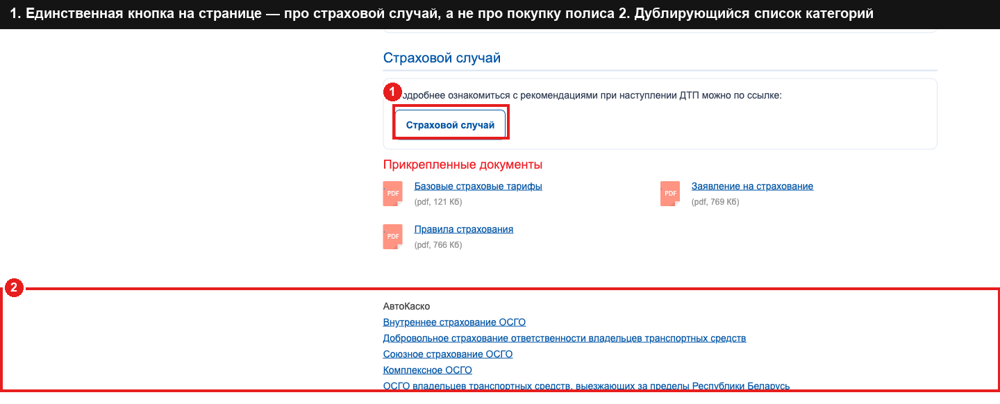

Главная проблема
Сайт хорошо справляется с ролью справочника: тарифы, лицензии, реквизиты — всё на месте и достоверно. Но у человека, который дочитал условия страхования и готов оформить полис, нет кнопки "купить" или "рассчитать стоимость" почти нигде на сайте. Единственный шаг, который ему остаётся, — искать номер телефона самому. На мобильном телефоне — а это большинство посетителей — даже номера телефона нигде не видно.
Что конкретно нашлось
На странице продукта нет кнопки "купить"
Страница КАСКО подробно рассказывает про тарифы и покрытие, но единственная кнопка на ней — для тех, кто уже страхуется и попал в ДТП, а не для тех, кто хочет купить полис.

На телефоне нигде не видно номера компании
На компьютере номер телефона показан в шапке сайта. На телефоне — нет: ни в шапке, ни в меню, ни в футере. Для страховой компании, которую часто выбирают по телефону, это прямая потеря клиентов.

Таблица тарифов КАСКО обрезана на телефоне
На мобильном экране таблица с ценами почти вдвое шире экрана, видно только 2 колонки из 5, текст обрывается на середине слова, и ничто не намекает, что таблицу можно прокрутить в сторону. Выглядит как сломанный сайт.

Страница «О компании» не вызывает доверия
Вся страница — это юридические реквизиты и один email. Ни истории, ни цифр, ни фото руководства, ни наград — хотя компании 35 лет, и это стоит показать.

Контакты — это сплошная простыня текста
Все 11 представительств по стране перечислены одним текстовым потоком без карты, без фильтра по городу и без карточек. Чтобы найти свой офис, нужно вручную читать весь список.

Устаревшее оформление главной страницы
Клипарт-машина, силуэты людей и «облачко» со ссылками в самом заметном месте страницы — и ни одной кнопки действия. Такой стиль ассоциируется с сайтами 2012–2015 годов.

Что уже хорошо и трогать не нужно
Это не «сайт слабый», это «сайт недоделанный»
Структура разделов понятная и одинаковая на всех страницах, юридической и справочной информации достаточно (лицензии, реквизиты, тарифы, документы), онлайн-сервисы уже существуют (личный кабинет, онлайн-ОСАГО, оплата ЕРИП), а форма входа в личный кабинет сделана аккуратно и правильно. Всё это нужно сохранить — переделывать нужно оформление и путь к покупке, а не саму структуру сайта.